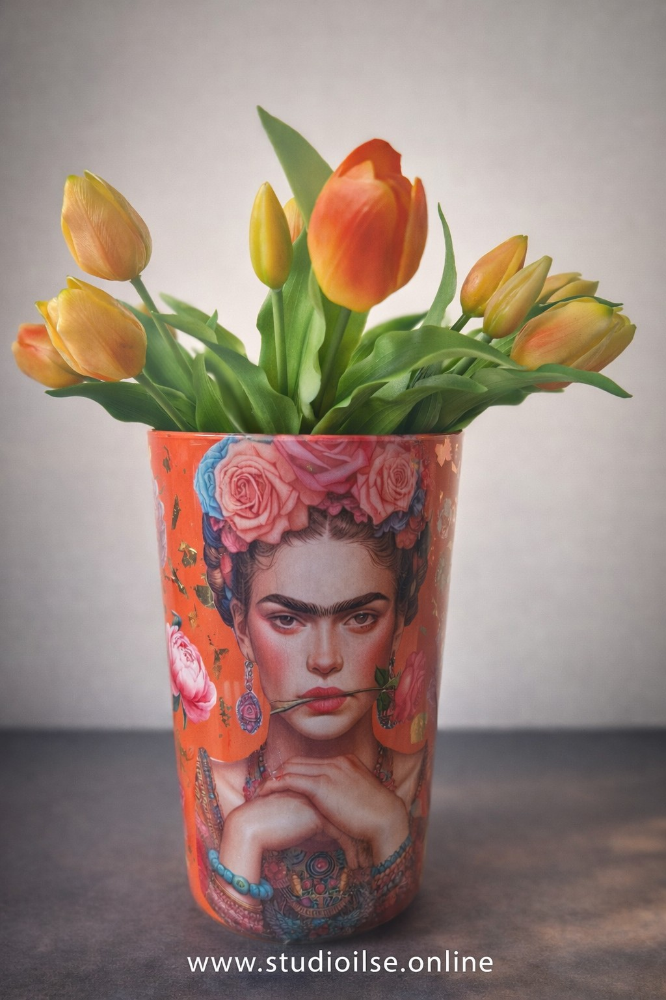
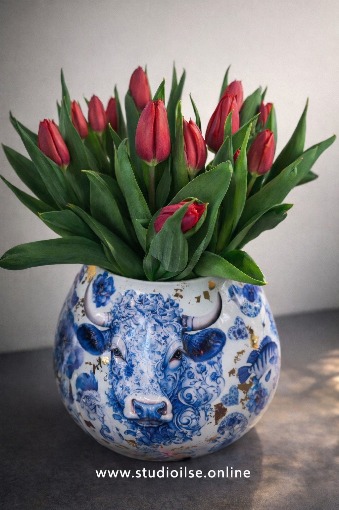

Bij een nieuw (voor)jaar hoort natuurlijk een nieuwe creatieve workshop! Het decoreren van vazen met de reversed decoupage techniek is ontzettend leuk om te doen — en het resultaat is echt verbluffend.
Je maakt jouw vaas helemaal naar eigen smaak en kiest kleuren die perfect passen bij jou en je interieur. Elke vaas wordt daardoor uniek!
Deze workshop ga ik op verschillende locaties geven. Meer informatie volgt via mijn socials en deze website.
Liever iets persoonlijks? Het is ook mogelijk om deze workshop bij jou thuis te organiseren. Ik kom gezellig naar je toe!
Heb je voldoende ruimte en minimaal 5 deelnemers? Neem dan gerust contact met mij op.

